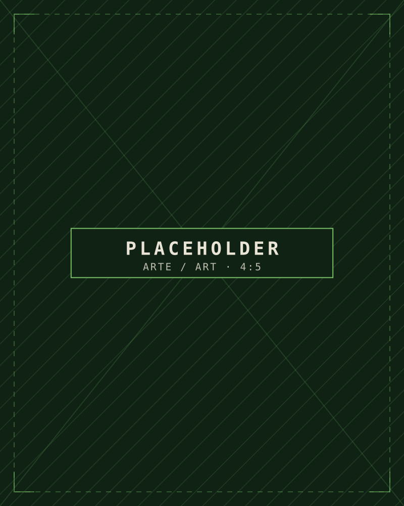
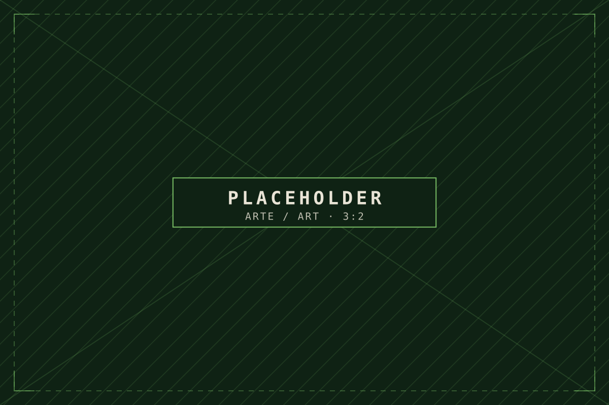
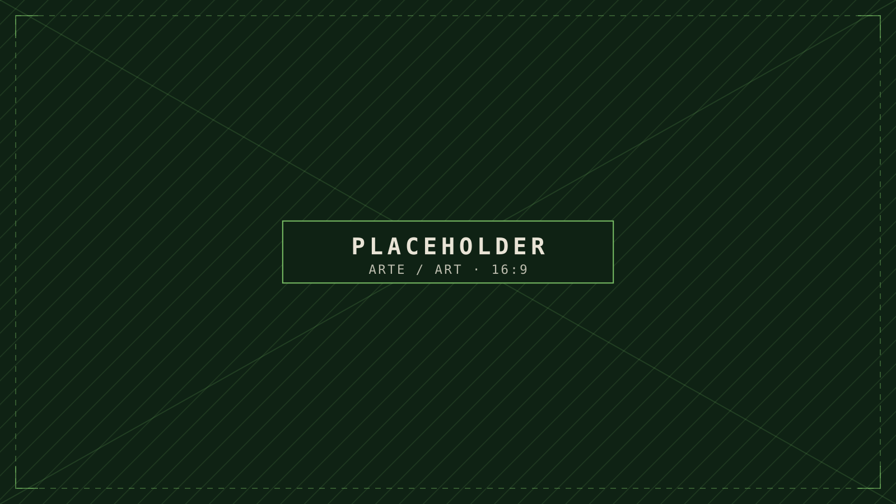
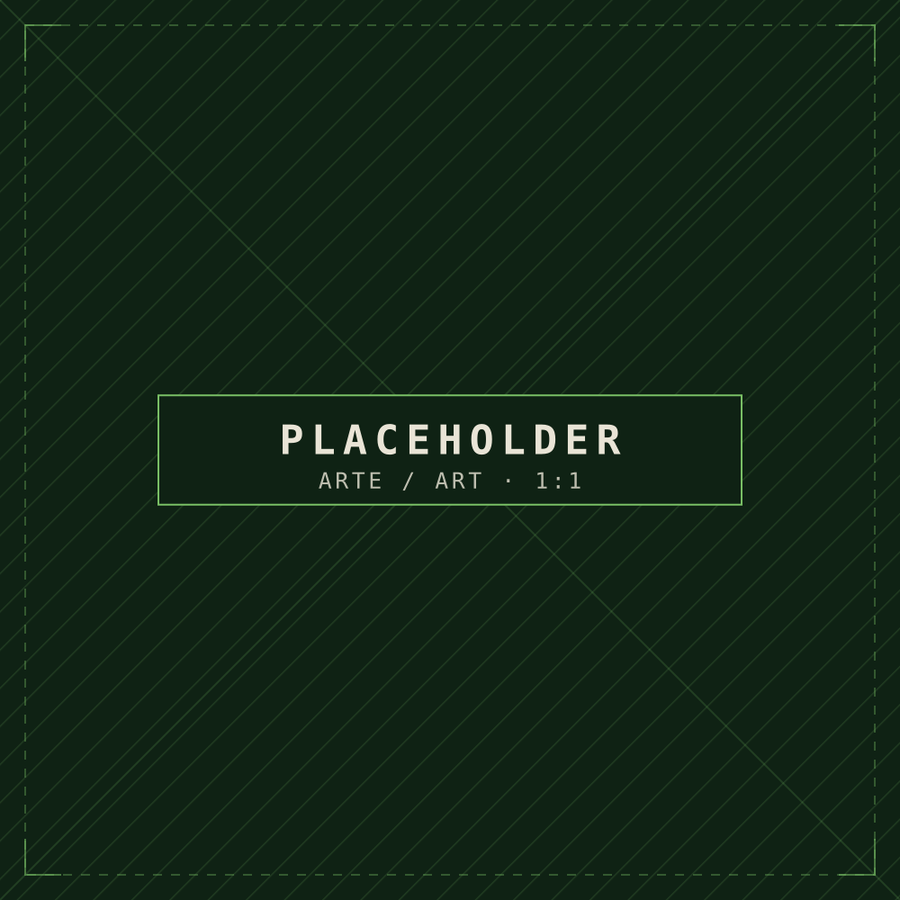

Escena final de la instalación Ser Parte (captura de pantalla) Imagen provisional
Proyectos / JA-01
Biopunk
Un mundo con hambre
Un mundo sin presencia humana, donde un ecosistema se desarrolla en sus propios términos: criaturas, hábitats y las relaciones entre ellos.
01El mundo
Un mundo sin humanos
La premisa central: un mundo sin presencia humana, donde el ecosistema se desarrolla sin que los humanos entren ni lo controlen. El foco está en las criaturas, sus relaciones, sus hábitats y las dinámicas del propio mundo.
Marcador Texto borrador basado en tu brief. Reemplázalo por tu propia introducción.
02Proyecto conectado
Ser Parte
Ser Parte es un proyecto relacionado. Está junto a Biopunk como contenido conectado y no lo reemplaza.
Marcador Aún faltan la descripción del proyecto y su enlace. La portada de esta página es una captura provisional de Ser Parte.
03Mapas y ecosistemas
Mapas y ecosistemas

04Guía de campo
Criaturas
Espécimen 02
Espécimen 03
05Hábitats
Ilustraciones de hábitats

06Producción
Modelos 3D y proceso

07Investigación
Investigación y desarrollo
¿Te interesa esta obra? Escríbeme, o encuentra el trabajo en otros espacios.